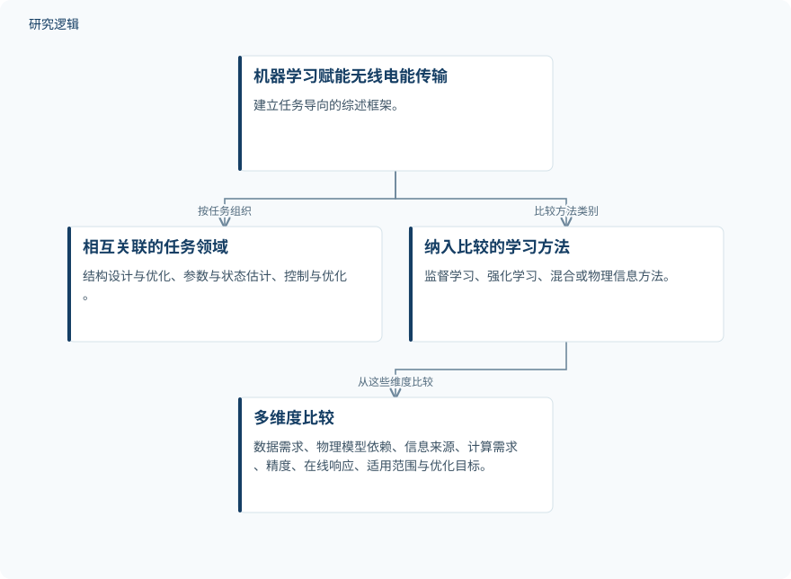

摘要解读
机器学习赋能无线电能传输：结构优化、状态与参数估计及自适应控制的任务导向综述
Machine Learning-Enabled Wireless Power Transfer: A Task-Oriented Review of Structural Optimization, State and Parameter Estimation, and Adaptive Control
解读更新 2026-11-10 11:20 · 依据公开摘要整理，未核验全文细节
无线电能传输如何在几何、耦合、负载与对准状态变化时，仍保持高效、安全？这篇综述从任务出发梳理机器学习的作用，阅读价值在于理解不同方法的适用条件，以及从模型表现走向工程部署的障碍。
文章目录
无线供能的难题不止于传输效率
无线电能传输（WPT）需要应对几何、耦合、负载、对准及运行条件的变化，同时兼顾能量传递效率与安全。摘要将机器学习的应用概括为加速结构设计、估计运行参数与状态，以及支持自适应控制和调度，涉及设计与运行两个层面。
按任务组织，而非只按算法分类
这是一篇综述，而非摘要中报告了新系统实验的研究。作者建立任务导向框架，将讨论组织为相互关联的结构设计与优化、参数与状态估计、控制与优化三个领域。
在这一框架下，作者比较监督学习、强化学习，以及混合或物理信息方法。比较维度包括数据需求、对物理模型的依赖、信息来源、计算需求、精度、在线响应、适用范围和优化目标，关注的不只是预测是否准确。
依据摘要整理的任务导向综述框架


展示摘要明确的任务组织与方法比较关系，不表示实验流程，也不是论文原图。
下载 SVG图示关系说明
实线表示相邻阶段的信息流，虚线表示跨阶段联系或反馈。
机器学习赋能无线电能传输 → 相互关联的任务领域：按任务组织；机器学习赋能无线电能传输 → 纳入比较的学习方法：比较方法类别；纳入比较的学习方法 → 多维度比较：从这些维度比较
方法各有前提，部署仍有共同障碍
摘要归纳，监督学习在具备代表性标注数据时，可用于快速代理建模、回归和分类；强化学习面向序贯控制与调度，但面临奖励设计、安全探索及仿真到现实迁移的挑战。混合方法则融合物理知识与数据驱动模型，以改善数据效率和物理一致性。
作者指出的工程部署障碍包括：数据集有限且存在偏差、分布外泛化能力不足、物理一致性不足、在线自适应不安全、嵌入式资源受限，以及缺少标准化基准。方法能够处理某类任务，并不等于其已具备可靠部署条件。
摘要不足以判断比较证据的强弱
仅凭本次完整摘要，无法判断综述纳入的文献数量、检索与筛选范围，也无法核实各方法所用数据的样本规模、比较条件和验证工况。摘要没有给出定量性能对照，因此不能据此排列算法优劣，或判断结论对具体设备的适用程度；这些信息未在摘要报告，不代表论文没有讨论。
阅读启发：把精度放回数据与安全条件中
阅读启发：关注结构优化时，可进一步查看代理模型的标注数据是否具有代表性，以及物理知识如何进入模型；关注智能运维时，则可追问状态估计在工况变化下的可靠性，以及在线调整的安全边界。
作者将不确定性感知与物理信息学习、安全仿真到现实迁移、轻量化边缘部署、分布式协调、可复现评价和数字孪生辅助开发列为未来重点。建议将这些方向作为继续阅读的线索，而非已被本文验证的改进效果。
以上为本站阅读启发与建议，不是论文已验证的结论。